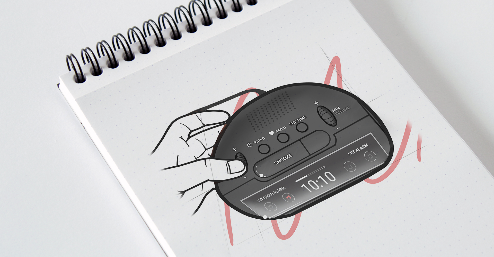

This project aims to revisit the Brandt BCR173 alarm clock to more precisely meet ergonomic criteria. Our goal is to consider not only anthropomorphic aspects but also all dimensions of the user experience related to the use of this object.
We adopted a methodical approach based on in-depth ergonomic analysis. This primarily relied on direct observation of product usage. By gathering representative users, we were able to gain a finer understanding of real-world usage, thus enabling us to compare this usage to that envisioned by the designer. We also took into account various factors of variability such as time of day, age, language, etc.
Based on this rigorous analysis, we were able to formulate an innovative design proposal for the Brandt BCR173 alarm clock. This proposal includes a new navigation system, a reorganization of the interface, and a redesigned aesthetic, aiming to improve both ergonomics and the user experience.
Through our user-centered approach and ergonomic methodology, we have gained a better understanding of user needs and proposed a more tailored solution. The new design of the Brandt BCR173 alarm clock is both more user-friendly and more efficient, thus offering an optimized and enriched user experience.
